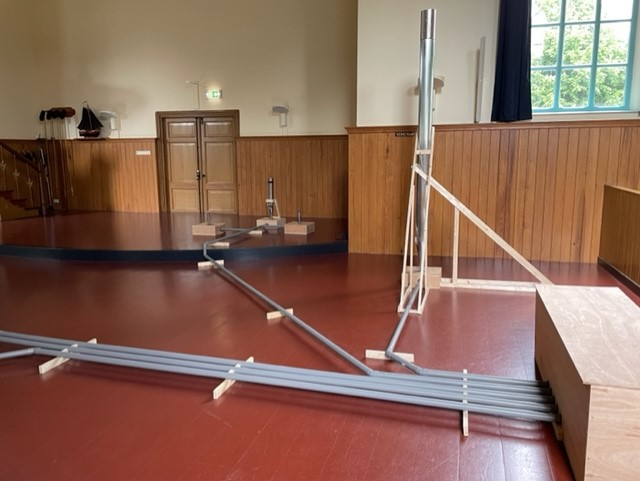
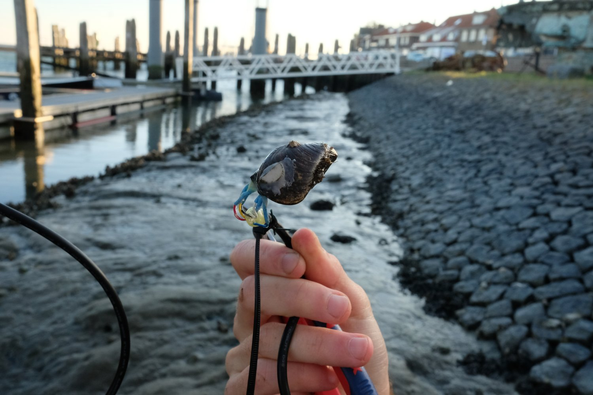
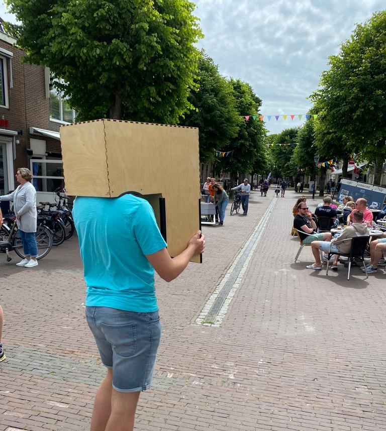

I explored the world of art installations at two different locations.
Oerol
Oerol is an annual event with many works of art and performances. The event is on Terschelling,
the most beautiful Wadden Island in the Netherlands. During one week there is plenty to do/see everywhere on the island.
These are the two best works of art in my opinion:


This is the "waddenorgel", a real mussel on the island is has a sensor attached to it that records the sound of the mussel heartbeat. This sound is then
sent live to an organ made out of tubes and boxes. I thought this was a very cool project that combined technology with sounds.

In this art installation, the user can wear all sorts of mirrors. While wearing them you will see the world in a different perspective, for example I
tried a backwards one and an upside down perspective (picture). I really liked how simple this idea is, while still being a really creative installation.
Biennale Arte
When I was in Venice, I visited multiple art installations across the city in Italy. Unlike Oerol, this exhibition took place from april until november.
This also makes it that the art installations were designed for longer use, and not for a short time. This Exhibition was also on a way larger scale than
Oerol, as it consists of 1433 works. The most impressive part of the exhibition were the 80 National Pavilions, here countries can showcase their art by
sending an artist from their country.